Sensors Documentation
← Back to Portfolio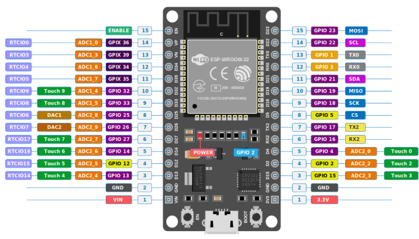
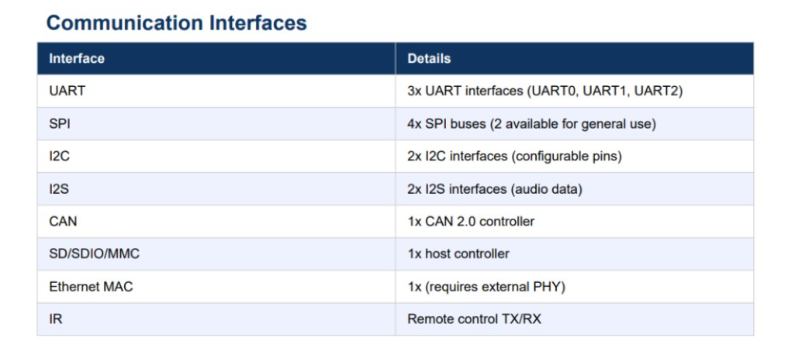
The ESP32 is a low-cost, low-power microcontroller developed by Espressif Systems. It is one of the most popular chips for IoT and embedded projects because it integrates Wi-Fi (802.11 b/g/n) and Bluetooth (Classic + BLE) on a single chip. Built on a dual-core Xtensa LX6 processor running up to 240 MHz, it offers high performance while maintaining energy efficiency.
| Feature | Specification |
|---|---|
| Processor | Dual-core Xtensa LX6, 32-bit, up to 240 MHz |
| Memory | 520 KB SRAM, 448 KB ROM |
| Connectivity | Wi-Fi (2.4 GHz), Bluetooth v4.2 BR/EDR + BLE |
| GPIO Pins | 34 Programmable Pins |
| ADC | 18-channel 12-bit ADC |
| DAC | 2 × 8-bit DAC |
| Voltage | 3.0V – 3.6V (3.3V Logic) |
| Security | AES, SHA, RSA, ECC Hardware Acceleration |
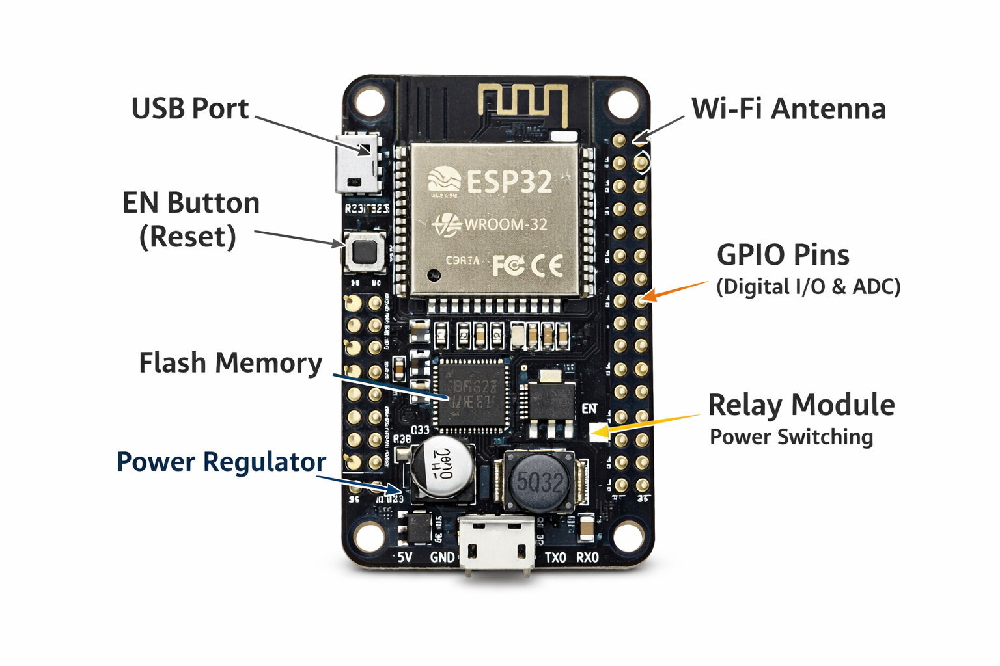
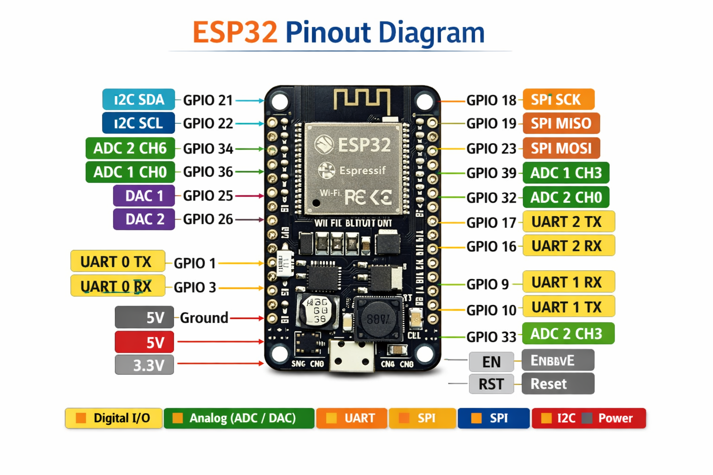
In the Solar Dryer Project, the ESP32 acts as the central controller of the system. It reads temperature and humidity data from the DHT11 sensor, controls motors and fans through the L298N motor driver, operates relays, and displays information on the 8×8 LED Matrix Display.
Through Wi-Fi connectivity, the ESP32 can also transmit sensor data to cloud platforms and mobile applications, enabling remote monitoring and automation. This makes the ESP32 the heart of the Solar Dryer System.
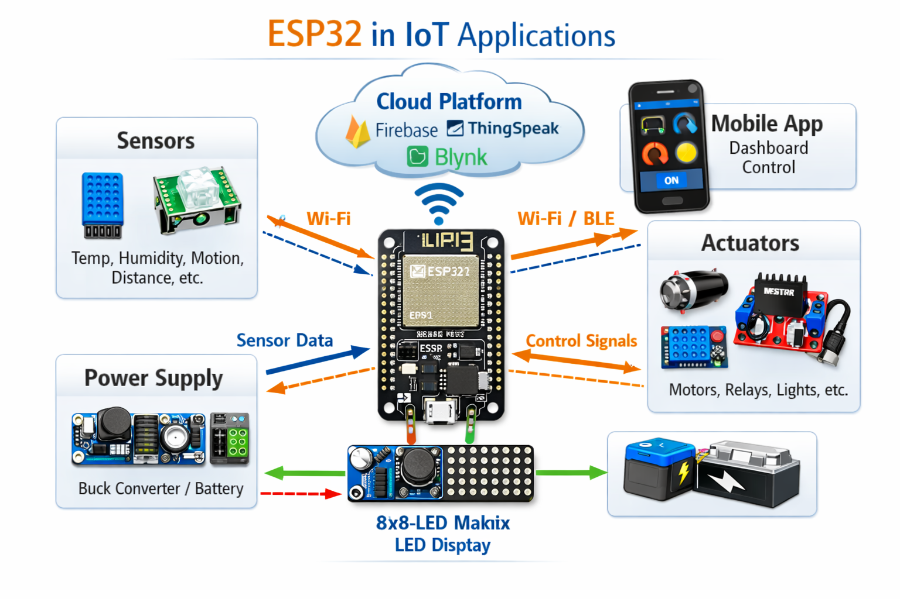
At the heart of the system, the ESP32 collects sensor data, processes it, and controls outputs. It also provides Wi-Fi and Bluetooth connectivity for remote monitoring.
The DHT11 sends temperature and humidity data to the ESP32. This helps monitor drying conditions inside the solar dryer.
The ESP32 controls motors and fans through the L298N driver, regulating airflow according to environmental conditions.
The relay module allows the ESP32 to safely control higher-power loads such as heaters and external fans.
Temperature, humidity, and system status information are displayed on the LED matrix for real-time feedback.
The buck converter supplies a stable regulated voltage to the ESP32 and connected modules, ensuring reliable operation.
The DHT11 is a low-cost digital temperature and humidity sensor widely used in IoT, automation, weather monitoring, and embedded systems projects. It combines a humidity sensing component, an NTC thermistor, and a signal processing IC to provide calibrated digital output. The sensor communicates with microcontrollers such as ESP32 and Arduino through a single-wire communication protocol.
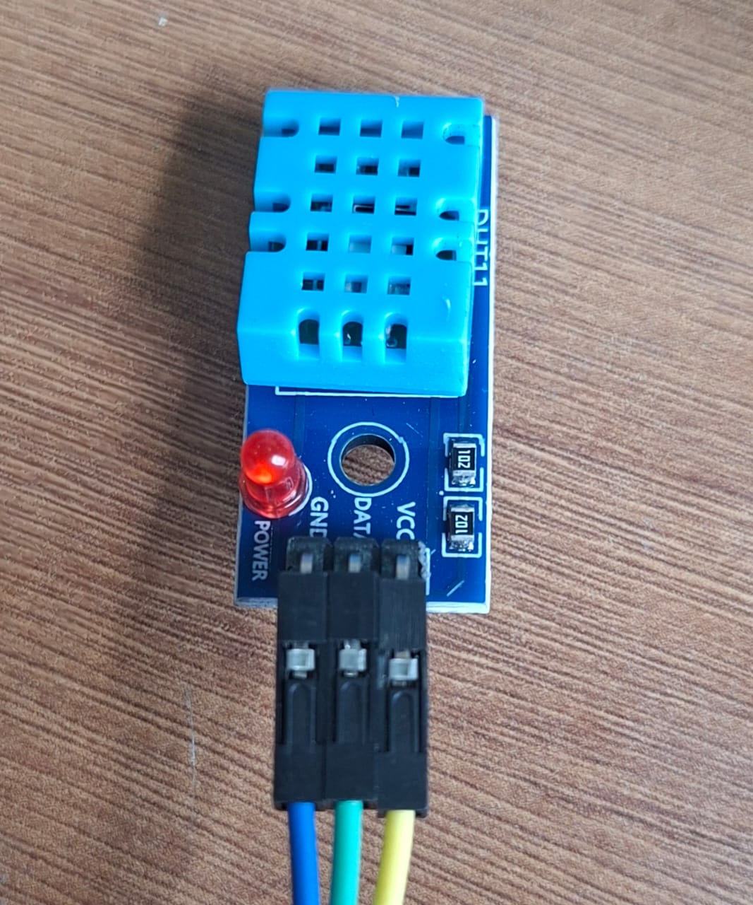
Figure 1: DHT11 Temperature & Humidity Sensor
| Component | Function |
|---|---|
| Humidity Sensing Element | Polymer film capacitor that changes capacitance according to moisture levels. |
| Temperature Sensing Element | NTC thermistor that changes resistance with temperature. |
| Signal Processing Chip | Converts analog measurements into calibrated digital output. |
| Parameter | Value |
|---|---|
| Supply Voltage | 3.3V – 5.5V |
| Maximum Current | 2.5mA during measurement |
| Output Signal | Digital Single-Wire Protocol |
| Temperature Resolution | 1°C |
| Humidity Resolution | 1% RH |
| Temperature Accuracy | ±2°C |
| Humidity Accuracy | ±5% RH |
| Sampling Rate | 1 Hz (1 reading per second) |
The DHT11 communicates using a single-wire serial protocol. Data is transmitted as a 40-bit packet containing humidity, temperature, and checksum information. The ESP32 reads the packet and verifies the checksum before using the sensor data.
| Data Field | Size |
|---|---|
| Humidity Integer Part | 8 Bits |
| Humidity Decimal Part | 8 Bits |
| Temperature Integer Part | 8 Bits |
| Temperature Decimal Part | 8 Bits |
| Checksum | 8 Bits |
In the solar dryer system, the DHT11 continuously monitors environmental conditions inside the drying chamber and sends data to the ESP32 controller for intelligent decision-making.
| Function | Description |
|---|---|
| Monitoring Chamber Conditions | Measures temperature and humidity inside the dryer. |
| Automation Trigger | Provides input for controlling fans and heaters. |
| Data Display | Shows readings on LED Matrix display. |
| Cloud Monitoring | Data can be sent through ESP32 Wi-Fi to dashboards. |
| Pin | Name | Function |
|---|---|---|
| 1 | VCC | Power Supply (3.3V–5V) |
| 2 | DATA | Digital Data Output |
| 3 | NC | Not Connected |
| 4 | GND | Ground |
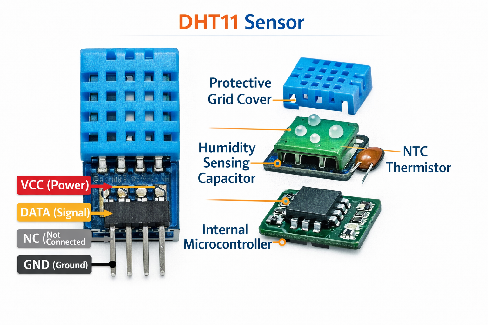
Figure 1: DHT11 Temperature & Humidity Sensor
The DHT11 sensor plays a vital role in the solar dryer project by continuously measuring temperature and humidity conditions. The sensor sends real-time data to the ESP32, enabling automated control of fans, heaters, and display systems. Its simplicity, low cost, and ease of integration make it an excellent choice for educational and IoT-based environmental monitoring applications.
The L298N is a dual H-Bridge motor driver module that enables microcontrollers such as the ESP32 to control the direction and speed of DC motors, fans, and other inductive loads. It can drive two motors independently and is widely used in robotics, automation systems, and IoT projects. In the Solar Dryer Project, the L298N controls the airflow fan based on temperature and humidity readings received from the DHT11 sensor.
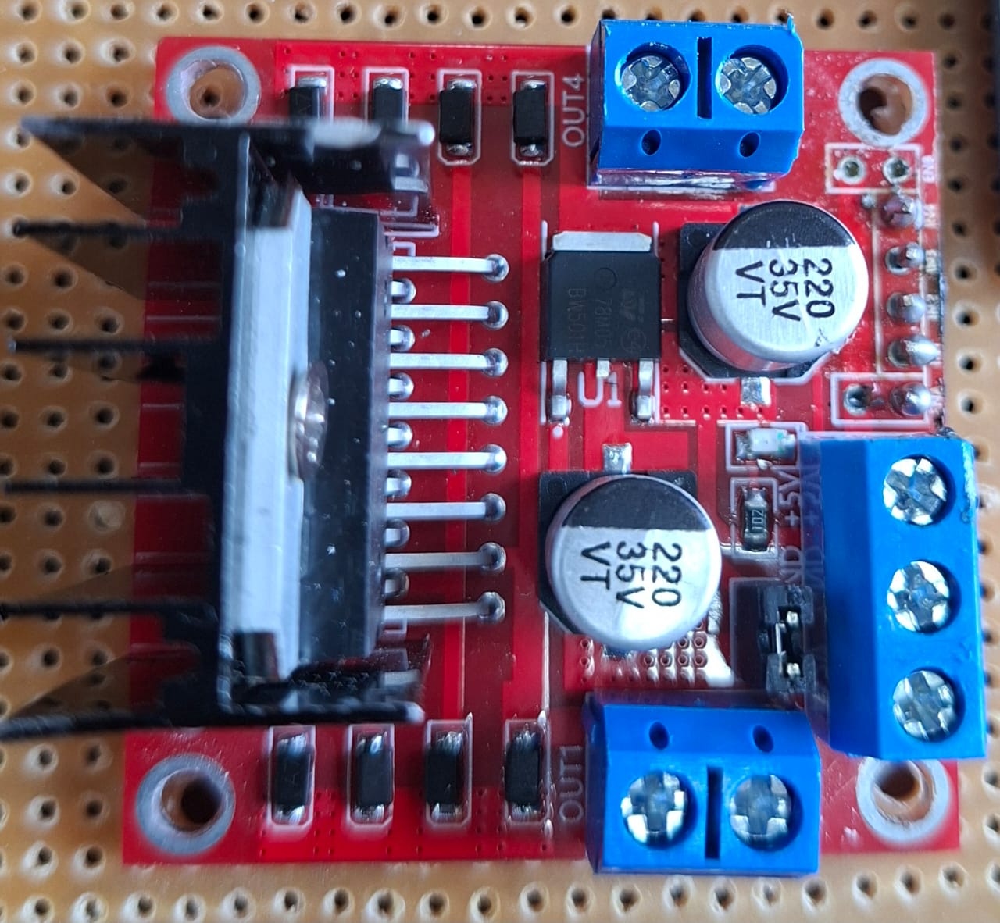
Figure 1: L298N Motor Driver Module with labeled components
| Component | Function |
|---|---|
| L298N IC | Main dual H-Bridge motor driver chip |
| IN1 – IN4 | Input control pins from ESP32 |
| OUT1 – OUT4 | Motor output terminals |
| ENA / ENB | Enable pins for PWM speed control |
| 12V, 5V, GND | Power supply terminals |
| Heat Sink | Dissipates heat during operation |
| Parameter | Typical Value |
|---|---|
| Operating Voltage | 5V – 35V |
| Logic Voltage | 5V |
| Maximum Current per Channel | 2A |
| Number of Channels | 2 (Motor A & Motor B) |
| Control Interface | Digital + PWM |
The L298N uses dual H-Bridge circuits to control motor rotation direction and speed. By changing the logic levels of the input pins, the current flow through the motor can be reversed, allowing forward and backward rotation.
| IN1 | IN2 | Motor Direction |
|---|---|---|
| HIGH | LOW | Forward |
| LOW | HIGH | Reverse |
| HIGH | HIGH | Stop / Brake |
| LOW | LOW | Stop |
Speed control is achieved using PWM signals applied to the ENA and ENB pins. Higher duty cycles result in faster motor speeds, while lower duty cycles reduce speed.
The L298N acts as the motor control interface between the ESP32 and the ventilation fan inside the solar dryer. Based on environmental conditions detected by the DHT11 sensor, the ESP32 adjusts airflow to maintain efficient drying conditions.
| Function | Description |
|---|---|
| Fan Control | Drives the ventilation fan inside the dryer |
| Airflow Regulation | Adjusts airflow based on humidity and temperature |
| Automation | Receives commands directly from ESP32 |
| Energy Management | Runs fan only when necessary to save power |
| Pin | Description |
|---|---|
| IN1 | Motor A Direction Control 1 |
| IN2 | Motor A Direction Control 2 |
| IN3 | Motor B Direction Control 1 |
| IN4 | Motor B Direction Control 2 |
| ENA | Motor A PWM Speed Control |
| ENB | Motor B PWM Speed Control |
| OUT1, OUT2 | Motor A Output Terminals |
| OUT3, OUT4 | Motor B Output Terminals |
| 12V | Motor Power Supply Input |
| 5V | Logic Power Supply |
| GND | Ground Connection |
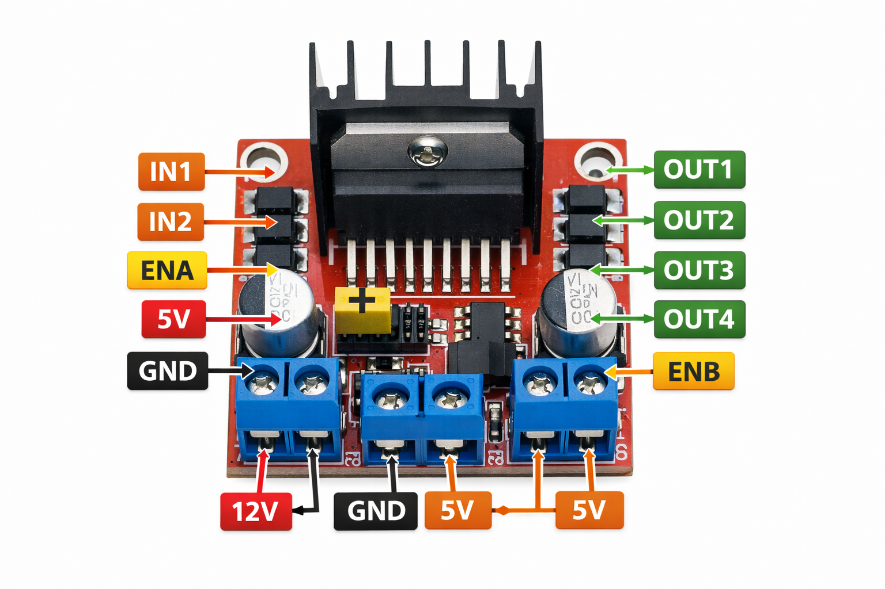
The L298N Motor Driver Module serves as the actuator control unit of the solar dryer system. It receives commands from the ESP32 and regulates fan operation to maintain proper airflow and drying conditions. By providing reliable motor control, speed adjustment, and direction management, the L298N plays a critical role in achieving efficient and automated solar drying.
A relay module is an electrically operated switch that allows low-voltage circuits such as the ESP32's 3.3V logic to control high-voltage devices including heaters, fans, lamps, and other electrical appliances. It acts as an interface between the microcontroller and the power circuit, providing electrical isolation and improved safety.
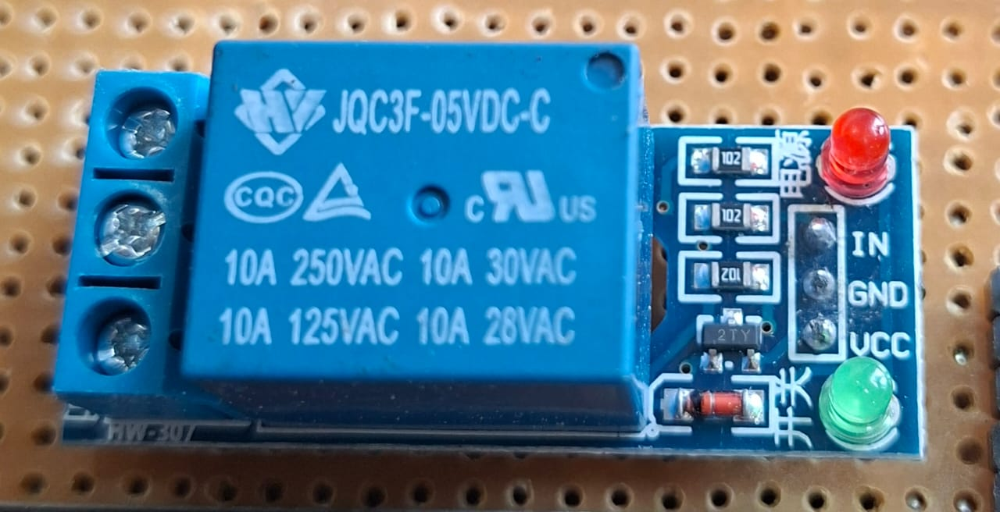
Figure 1: Relay Module with labeled components
| Component | Function |
|---|---|
| Electromagnetic Coil | Creates magnetic field to switch contacts |
| COM Terminal | Common terminal of load circuit |
| NO Terminal | Normally Open contact |
| NC Terminal | Normally Closed contact |
| Transistor Driver | Amplifies ESP32 control signal |
| Protection Diode | Protects against back EMF voltage spikes |
| Indicator LED | Shows relay activation status |
| Parameter | Typical Value |
|---|---|
| Operating Voltage | 5V DC |
| Trigger Voltage | 3.3V – 5V |
| Maximum Load Voltage | 250V AC / 30V DC |
| Maximum Load Current | 10A |
| Isolation | Optocoupler (module dependent) |
The relay module operates using an electromagnetic switching mechanism. When the ESP32 sends a HIGH signal to the relay input pin, the transistor driver activates the relay coil. The energized coil generates a magnetic field that moves the internal switch from the Normally Closed (NC) position to the Normally Open (NO) position.
| ESP32 Signal | Relay State | Contact Position | Load Status |
|---|---|---|---|
| HIGH | Activated | COM → NO | ON |
| LOW | Deactivated | COM → NC | OFF |
When the control signal is removed, the coil de-energizes and the switch returns to its original position using an internal spring mechanism.
In the solar dryer system, the relay module controls high-power devices such as heating elements and auxiliary fans. It acts as a safe interface between the ESP32 controller and the high-voltage power circuit.
| Function | Description |
|---|---|
| Heater Control | Turns heating element ON or OFF automatically |
| Electrical Isolation | Protects ESP32 from high-voltage circuits |
| Automation | Responds to DHT11 sensor readings |
| Energy Efficiency | Runs heater only when required |
| Terminal | Description |
|---|---|
| COM | Common terminal for load connection |
| NO | Normally Open – connected when relay is ON |
| NC | Normally Closed – connected when relay is OFF |
| IN | Control signal input from ESP32 |
| VCC | Power supply input (5V) |
| GND | Ground connection |
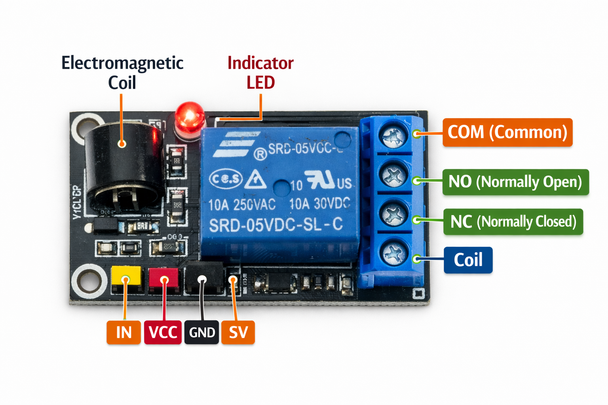
The Relay Module serves as the switching and protection unit of the solar dryer system. It allows the ESP32 to safely control high-power devices such as heaters and auxiliary fans while maintaining electrical isolation. By automating heater operation according to temperature readings from the DHT11 sensor, the relay contributes significantly to efficient, reliable, and safe solar drying performance.
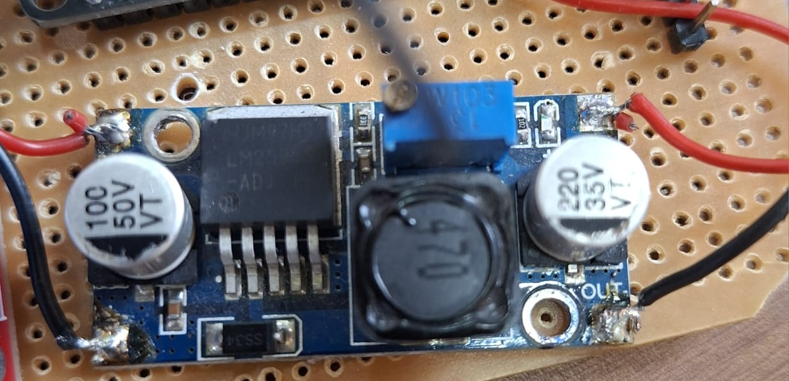
The LM2596 is a step-down (buck) voltage regulator designed to convert a higher DC voltage into a lower, stable output voltage. It is widely used in embedded systems, IoT projects, robotics, and solar-powered applications. The module is based on the LM2596S-ADJ IC, operating at a switching frequency of 150 kHz, ensuring efficient voltage conversion with minimal heat generation.
The LM2596 uses Pulse Width Modulation (PWM) to regulate voltage. It rapidly switches the input voltage ON and OFF while controlling the duty cycle to produce the desired output voltage.
The inductor stores energy and maintains current flow, while the capacitors smooth the switching pulses into a stable DC output. Efficiency typically ranges from 75% to 90%.
| Parameter | Typical Value |
|---|---|
| Input Voltage | 4V – 40V DC |
| Output Voltage | 1.23V – 37V DC (Adjustable) |
| Output Current | Up to 3A |
| Efficiency | 75% – 90% |
| Switching Frequency | 150 kHz |
| Operating Temperature | -40°C to +125°C |
The LM2596 acts as the power management unit of the solar dryer. It converts fluctuating solar panel voltage into a stable output suitable for electronic modules.
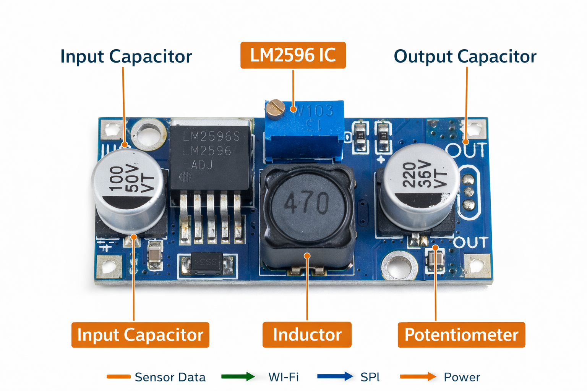
The LM2596 DC-DC Buck Converter is the heart of the power supply system in the solar dryer project. It converts higher solar panel voltage into stable and usable power for the ESP32, DHT11 sensor, relay module, LED matrix display, and L298N motor driver, ensuring reliable performance, energy efficiency, and system safety.
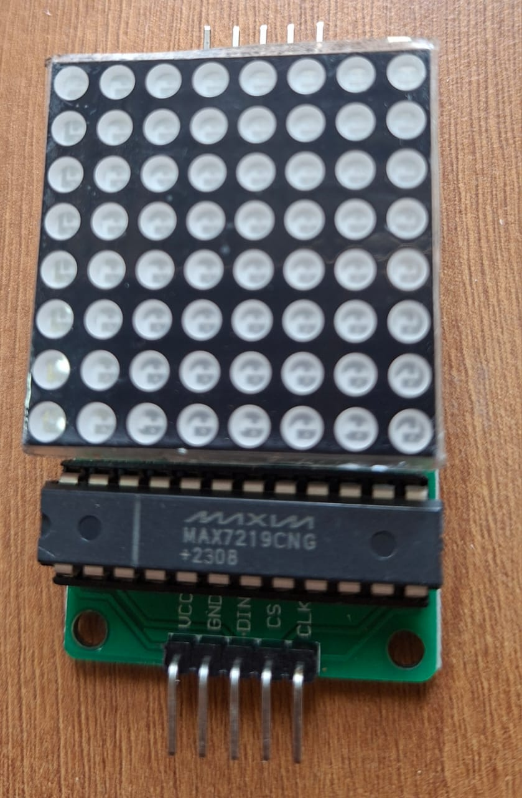
The LED Matrix is a grid of LEDs arranged in rows and columns (commonly 8×8 or 8×32). It displays characters, numbers, and symbols by lighting specific LEDs. In the solar dryer project, it shows real-time temperature, humidity, and system alerts from the ESP32.
| Parameter | Typical Value |
|---|---|
| Operating Voltage | 3.3V – 5V |
| Communication | SPI |
| Current Consumption | ~320mA |
| Display Size | 8×8 or 8×32 LEDs |
| Driver IC | MAX7219 / MAX7221 |
The ESP32 sends data to the MAX7219 driver through SPI communication. The driver activates specific LEDs to create characters, numbers, or symbols. Each LED acts as a pixel and can be individually controlled.
Brightness and refresh rates can be adjusted through software, enabling scrolling text, animations, and sensor value displays.
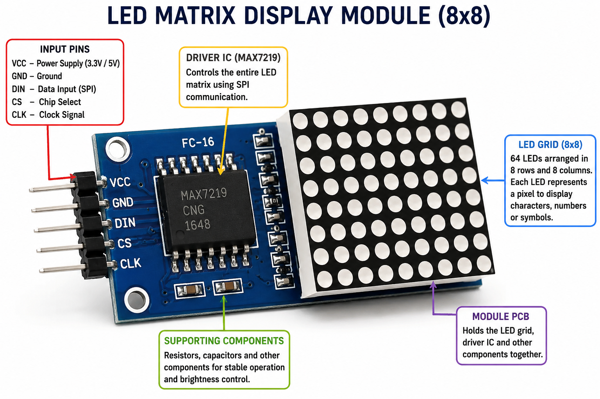
The LED Matrix Display serves as the visual interface of the solar dryer system. By displaying temperature, humidity, fan status, heater status, and warning messages, it improves usability and monitoring. Combined with the ESP32, DHT11, L298N, Relay Module, and LM2596, it forms an important part of the smart solar dryer ecosystem.